Don Celender's Artist Trading Cards: Artball and Beyond
Non-sport collectors spend a lot of time chasing first appearances, and some of the most interesting ones came from an established conceptual artist who was well connected in the contemporary art world of the 1960s and 1970s. That artist was Don Celender, and his trading cards date from 1971 and 1972. Celender took the most familiar collectible formats of his day, the baseball card, the football card, and the deck of playing cards, and filled them with painters, sculptors, dealers, critics, and curators. The result is a body of work that sits right at the intersection of conceptual art and the trading card hobby.
The checklists are remarkable. Andy Warhol, Pablo Picasso, Roy Lichtenstein, Jasper Johns, Robert Rauschenberg, Jackson Pollock, Mark Rothko, Georgia O'Keeffe, Marcel Duchamp, and dozens of others appear in 1971 Artball alone, along with the gallery owners and critics who made their careers. For many of these figures, a Celender card may be the earliest trading card that shows the person rather than their work.
These cards are also art objects in their own right. Celender wasn't making a children's product with artists swapped in for ballplayers. He was using the format itself as part of the idea, turning the people and institutions of the art world into something you could collect, trade, and sort. That double identity is what makes them so interesting to me. It also helps explain why they are so hard to find. Many of the surviving cards now sit in the archives of major institutions, including the Smithsonian's Archives of American Art, the Getty Research Institute, the Detroit Institute of Arts, and the Walker Art Center.1,2,5,8 With so many copies held permanently in institutional collections, surviving examples on the secondary market are extremely scarce.
Who Was Don Celender?
Don Celender (1931–2005) was an American conceptual artist and art professor. He was born in Sharpsburg, Pennsylvania, earned a BFA from Carnegie Mellon in 1956 and a PhD in art history from the University of Pittsburgh in 1963, and worked briefly in the education department of the National Gallery of Art in Washington. He then took a position at Macalester College in St. Paul, Minnesota, where he taught and chaired the art department for four decades. He died in Pittsburgh in March 2005.3
Celender is best known for his survey works. Beginning at the end of the 1960s, he mailed questionnaires and deliberately absurd proposals to museum directors, politicians, artists, museum guards, and ordinary working people, then exhibited whatever came back. His work poked fun at the self-seriousness of the art world, and for decades he showed at OK Harris Gallery in SoHo, whose owner, Ivan Karp, represented him.3 Collectors will notice that Karp himself turns up in 1971 Artball Set 3, and again in the 1972 Holy Holy Art Cards.
The trading cards come from the same impulse. They take the art world as their subject, borrow the visual language of mass-market collectibles, and play the two against each other.
A Question of Firsts
For many of the people in Artball, these may well be their first trading cards. But as I discussed in my article on The Art Game, there's a distinction worth keeping in mind between a card that depicts an artist and one that depicts their work. Warhol is the clearest case: Bello's c.1967 El Mundo de la Pintura #278 showed his Campbell's soup cans, but Artball was the card that put Warhol himself on cardboard.
The same question applies across the checklist. Older figures like van Gogh, Picasso, and Matisse had their work, and in some cases their portraits, on earlier European cards, so each first-appearance claim has to be checked person by person. That said, there are a staggering number of first appearances in these sets.
Earlier appearances for major artists include:
- Pablo Picasso: 1952 Félix Potin
- Vincent van Gogh: 1959 Liebig
- Andy Warhol, Roy Lichtenstein, Jackson Pollock, and Mark Rothko: c.1967 El Mundo de la Pintura (their paintings, not the artists themselves)
Clear first appearances for major artists include:
- 1971 Artball: Georgia O'Keeffe, Donald Judd, Barnett Newman, and Dan Flavin
- 1972 Artball Playing Cards: Robert Indiana, Christo, and Sam Gilliam
- 1972 Holy Holy Art Cards: Alex Katz, Cy Twombly, and Wayne Thiebaud
- Both 1972 sets: Francis Bacon, who turns up as a Chiefs running back in the Playing Cards and, fittingly for the painter of the screaming popes, as a pope in Holy Holy
Obviously the term "major" is subjective, and to me every artist depicted in these sets is a major artist.
Where Artball almost certainly breaks new ground is with the dealers, critics, and curators. It's hard to imagine Leo Castelli, Hilton Kramer, or Dorothy C. Miller turning up on a card anywhere else.
The Three Projects
1. Artball (1971)
Artball is the heart of Celender's card work. According to the Smithsonian's Archives of American Art, it was issued as five numbered sets of 20 cards each, every set packaged in its own trading card box labeled "Artball" with the set number. On the front of each card, an art-world figure's face is superimposed onto the body of a baseball player, complete with a team name and position. The back shows a work of art associated with that person.1
The humor starts with the team names, which are just slightly off: the Kards, the Yankz, the Metz, the Anjels, the Cenators. Marcel Duchamp manages the Kards, Josef Albers manages the Yankz, Willem de Kooning pitches for the Cenators, and Édouard Manet takes the field for the Metz in a top hat. Warhol, fittingly, is an outfielder for the Yankz.
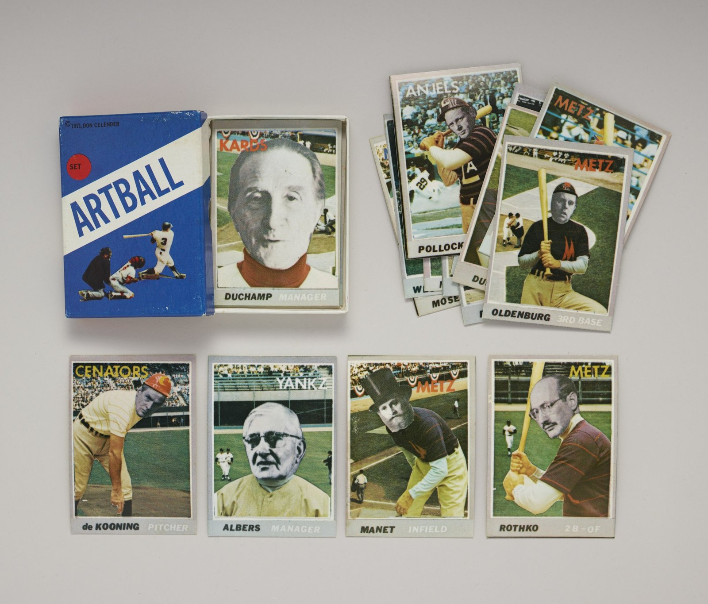
The checklist is a cross-section of art history as it stood in 1971: old masters of modernism like van Gogh, Manet, and Toulouse-Lautrec; the Abstract Expressionists; the Pop artists who were then still young; and the dealers, critics, and museum people who shaped their careers, such as Leo Castelli, Peggy Guggenheim, Alfred H. Barr Jr., Hilton Kramer, and Sidney Janis.
For collectors, the 1971 Artball cards also have one thing most artists' multiples don't: they are recognized by the grading companies. CGC grades the 1971 Artball series, so key cards can be authenticated, graded, and encapsulated like any other vintage trading card. As far as I know, the 1972 Playing Cards and Holy Holy cards haven't been added yet.
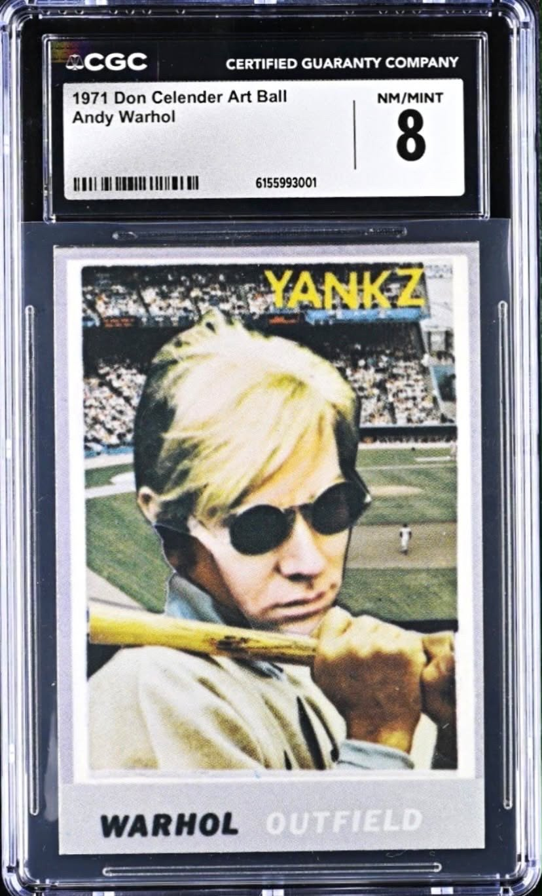
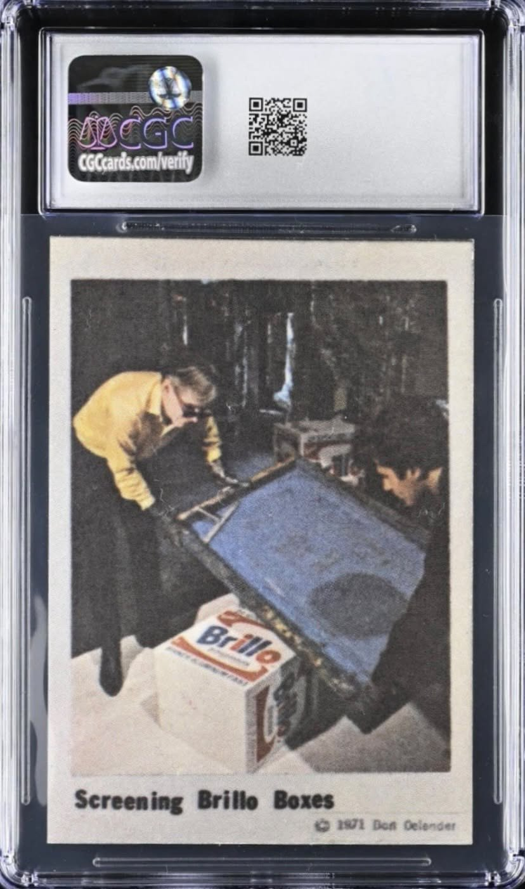
The back of the Warhol card shows how the 1971 backs work. Rather than a plain reproduction, it is a photograph of Warhol and an assistant pulling a screen over one of his Brillo Boxes. The front gives you the man, and the back gives you the work being made.
2. Artball Playing Cards (1972)
A year later, Celender took the idea in a different direction. Artball Playing Cards is a standard 54-card deck, four suits plus two jokers, that depicts art-world figures as football players. The backs are blue and carry the words "Art Ball." The joke runs all the way through the deck. The two jokers are both critics, John Canaday and Clement Greenberg, each cast as a "substitute," which is a pointed way to describe the people who sit on the sidelines and judge.4,7 Norman Rockwell, meanwhile, is a Bengals running back, pipe still in his mouth.
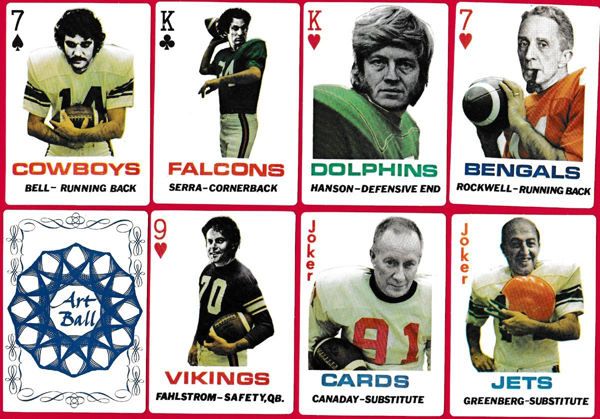
It works both as a functional deck of cards and as an artwork that uses a mass-market object to present the art world. The deck was published by O.K. Harris Gallery.5
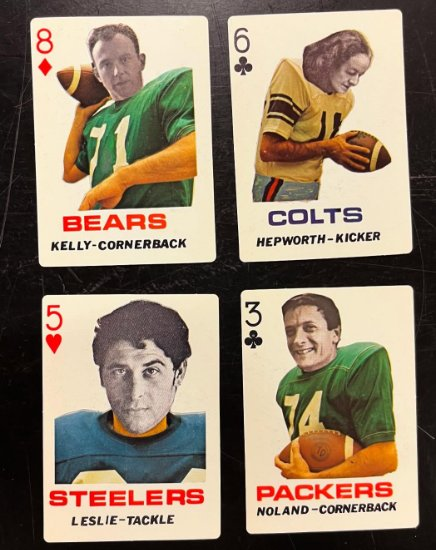
The deck came in a tuck box styled like any drugstore pack of playing cards, with suit symbols, a running back in mid-stride, and "Artball Playing Cards" across the front. The end flap carries the date: "© Don Celender '72."
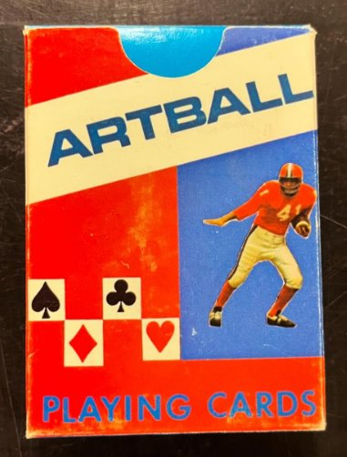
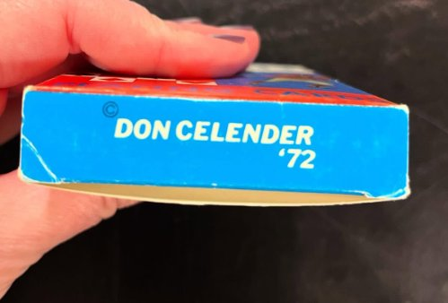
3. Holy Holy Art Cards (1972)
The third project trades sports for religion. Holy Holy Art Cards is a set of 50 cards depicting art-world figures as religious icons: popes, saints, monks, nuns, the Virgin Mary, avenging archangels. The back of each card carries a quotation by or about the person pictured. The box is labeled "HOLY HOLY ART CARDS, Fancy assorted Christmas selection, c. DON CELENDER," dressing the whole thing up like a box of holiday cards.6
The backs are where Holy Holy gets its bite. Each one is typed in red, like a devotional card, with a quotation chosen to sit against the saintly picture on the front. Francis Bacon, famous for his screaming popes after Velázquez, is cast as a pope himself. His card back quotes him on Velázquez and Rembrandt: "they were still, whatever their attude [sic] to life, slightly conditioned by certain types of religious possibilities, which man now, you can say, has had cancelled out for him."
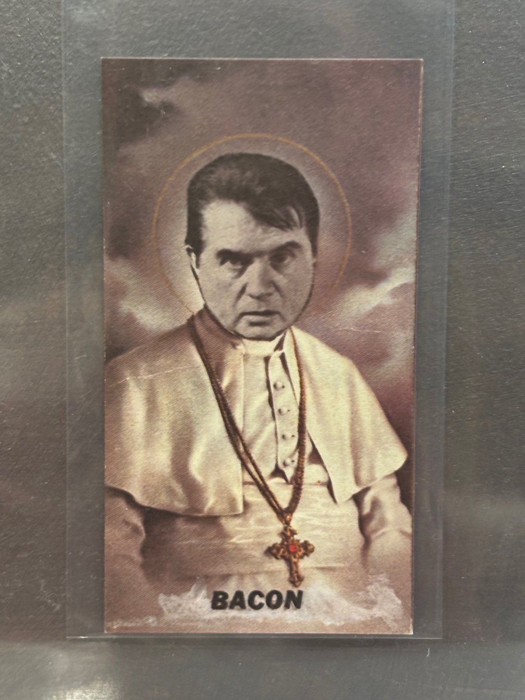
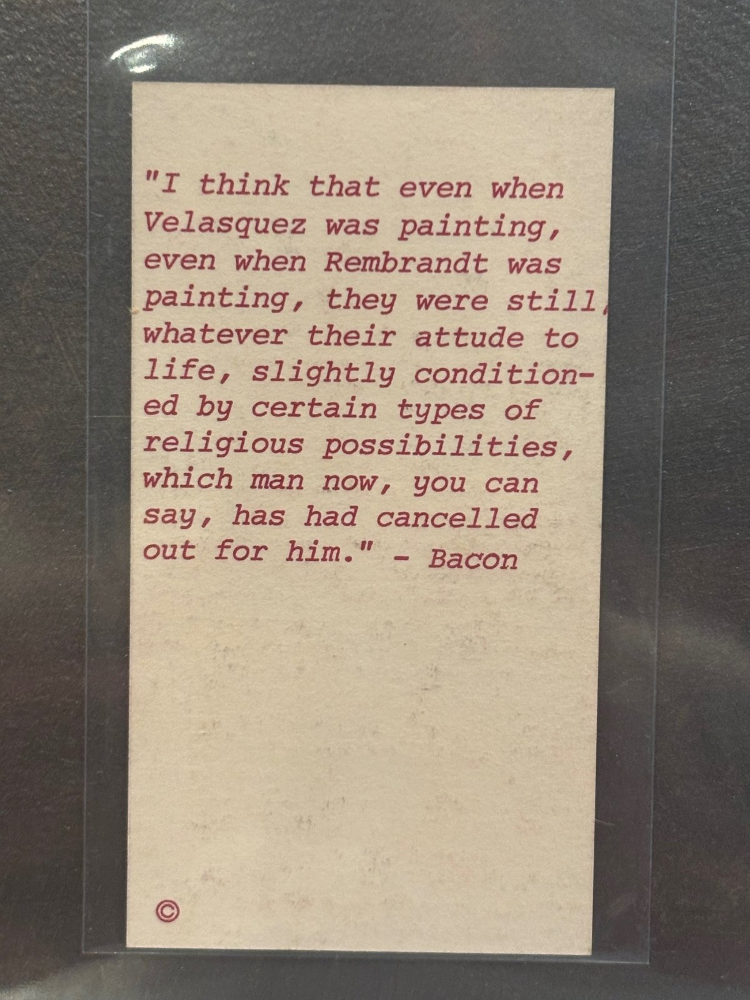
Andy Warhol appears as a young saint holding a lamb and a palm frond among lilies. His back skips the artist's own words and uses an interview about his private life, from John Wilcock's The Autobiography and Sex Life of Andy Warhol (1971): "Supposedly he goes to church every Sunday but I don't know if that's true." Roy Lichtenstein, a saint in a bow tie holding a prayer book, gets his own manifesto: "I'm anti-contemplative, anti-nuance, anti-getting away-from-the-tyranny-of-the-rectangle, anti-movement-and-light, anti-mystery, anti-paint-quality, anti-Zen…"
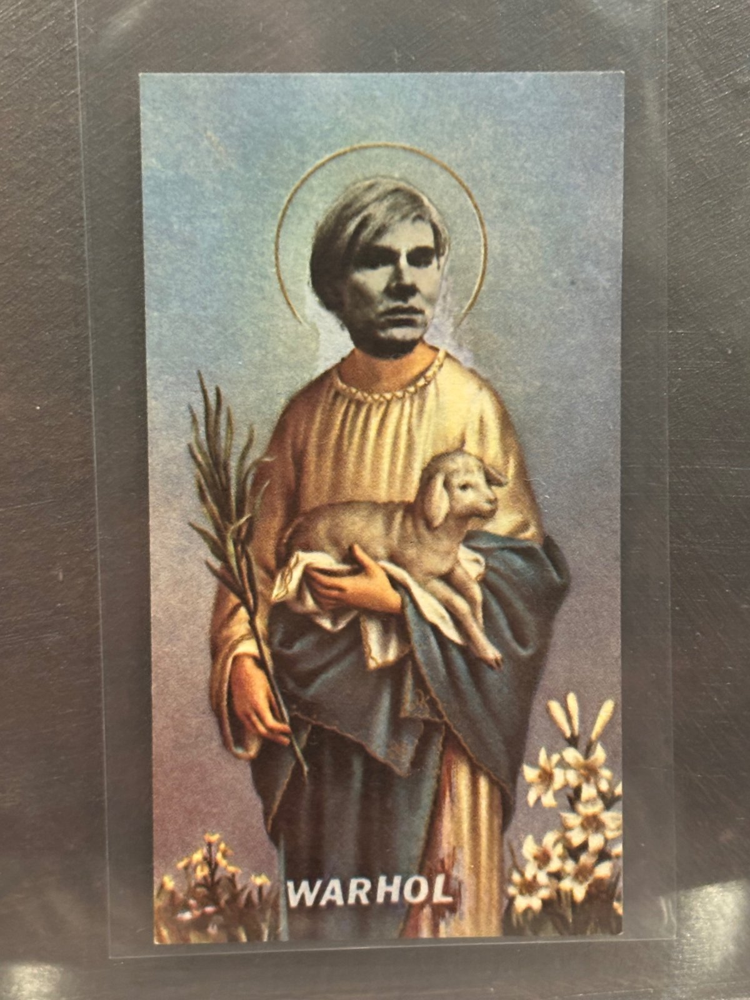
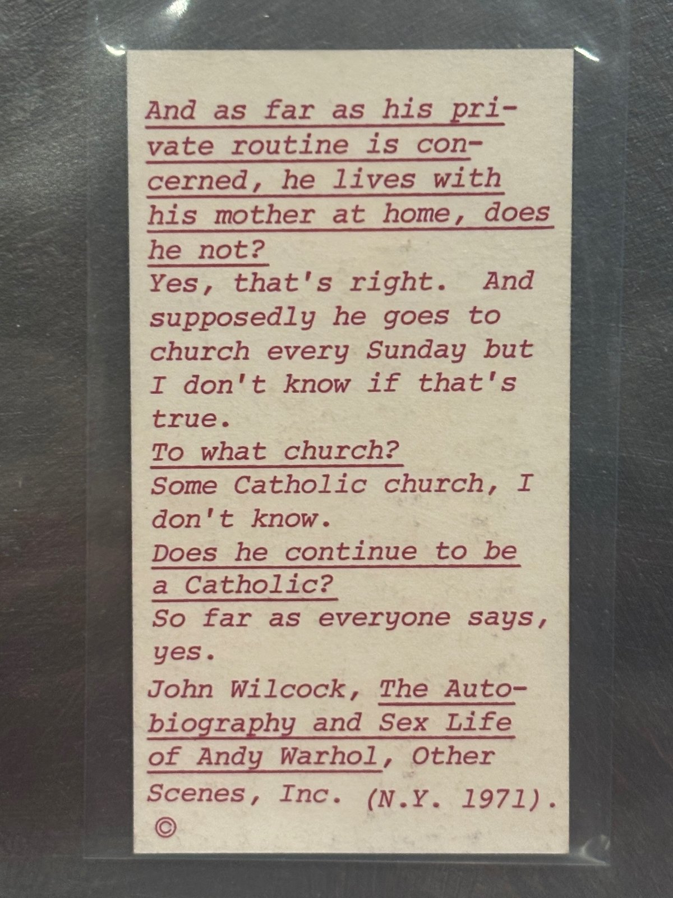
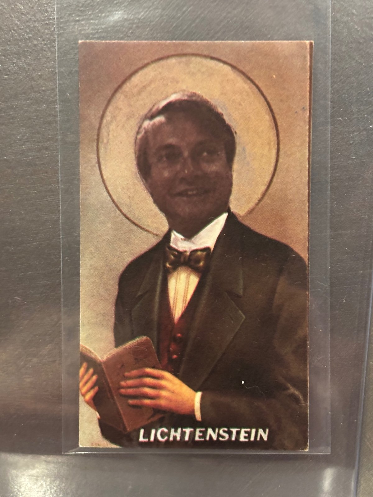
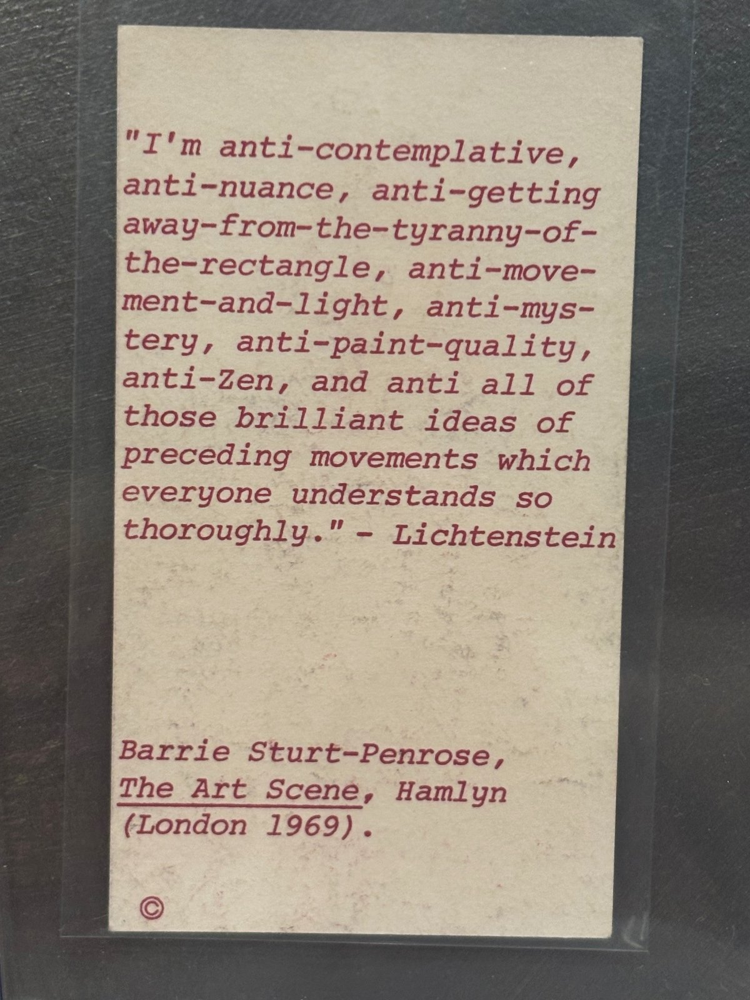
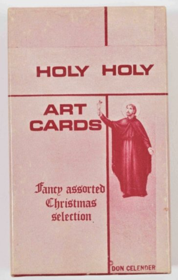
The casting is as pointed as the Artball teams. Helen Frankenthaler appears as the Madonna in a burst of golden light, J. Oliver Mitchell as the Virgin Mary, and Lucy Lippard as a nun. Claes Oldenburg, Philip Pearlstein, and Andrew Wyeth become parish priests, while Jasper Johns and Alex Katz share the same robed saint.
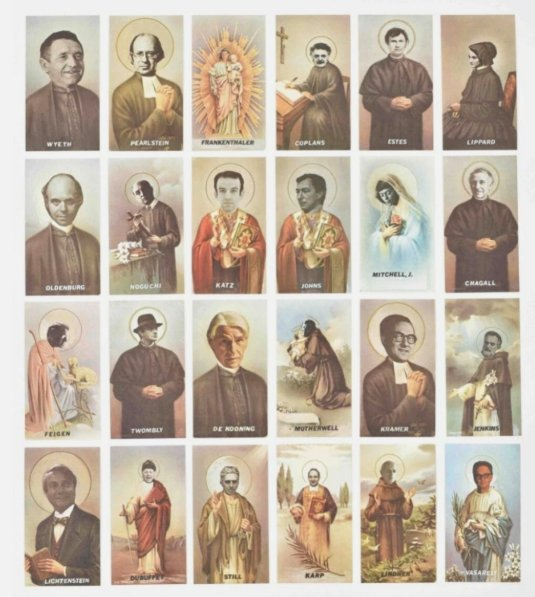
The 1971 Artball Checklist
Per the Smithsonian's Archives of American Art.1
Set 1: Josef Albers, Marcel Duchamp, Max Ernst, Alberto Giacometti, Robert Morris, Richard Pousette-Dart, Franz Kline, Jean Dubuffet, Georges Rouault, Leo Castelli, Isamu Noguchi, Anthony Caro, Vincent van Gogh, Marisol, Gerald Clarke, Bernard Berenson, Albert P. Ryder, Fernand Léger, Horace Pippin, Paul Jenkins.
Set 2: Helen Frankenthaler, George Luks, Hans Hofmann, Georges Braque, Victor Vasarely, Marc Chagall, Martha Jackson, Henry Moore, Richard Lippold, Raoul Dufy, Alfred H. Barr Jr., David Smith, Bradley Walker Tomlin, Georgia O'Keeffe, Pavel Tchelitchew, Grandma Moses, Arthur B. Davies, Albert Alexander Smith, Tony Smith, Allan Appel, J. Carter Brown.
Set 3: Robert Rauschenberg, William Glackens, Tom Wesselmann, Henri de Toulouse-Lautrec, Thomas Hart Benton, Édouard Manet, Henri Matisse, Adolph Gottlieb, Wassily Kandinsky, Yves Tanguy, Ivan Karp, Donald Judd, Larry Rivers, Thomas Eakins, Willem de Kooning, George Segal, Grace Hartigan, Jackson Pollock, Robert Henri, John Marin.
Set 4: John Chamberlain, Henri Rousseau, Hans Hartung, Ibram Lassaw, Amédée Ozenfant, John Goodrich, Hilton Kramer, Ray Johnson, Roy Lichtenstein, Jacques Lipchitz, Barnett Newman, Ad Reinhardt, Peggy Guggenheim, Bridget Riley, Matta, Rufino Tamayo, Piet Mondrian, Andrew Wyeth, Everett Shinn, Richard Lindner.
Set 5: Jasper Johns, Piet Mondrian, Dan Flavin, Thomas B. Hess, Mark Rothko, Pablo Picasso, Patrick Caulfield, Claes Oldenburg, Alexander Liberman, Alexander Calder, Andy Warhol, Ossip Zadkine, Pierre Soulages, Charles Burchfield, Clyfford Still, Allan Kaprow, Sidney Janis, Dorothy C. Miller, Sam Francis.
A note on this list: it comes straight from the Smithsonian's finding aid, which says each set has 20 cards. As transcribed there, though, Set 2 has 21 names, Set 5 has 19, and Piet Mondrian appears in both Set 4 and Set 5. Most likely one Set 2 name belongs in Set 5, or one of the Mondrian entries is a slip for someone else. I've left the list as the Smithsonian gives it until it can be checked against complete sets.
The 1972 Checklists
Artball Playing Cards (complete, 54 cards)
Read from a complete deck. The cards print surnames only, so first names are identifications. The two marked with a dagger (†) are best guesses: "Davis" is most likely the painter Gene Davis, and "Parker" the painter Raymond Parker, but neither is confirmed.
Richard Anuszkiewicz, Arman, Dore Ashton, Francis Bacon, Larry Bell, Richard Bellamy, Lee Bontecou, Pol Bury, John Canaday, John Chamberlain, Christo, Paula Cooper, Salvador Dalí, Allan D'Arcangelo, Gene Davis†, Jim Dine, André Emmerich, Öyvind Fahlström, Richard Feigen, Marilyn Fischbach, Henry Geldzahler, Sam Gilliam, Nancy Graves, Clement Greenberg, Red Grooms, Duane Hanson, Barbara Hepworth, Robert Indiana, Ellsworth Kelly, Nicholas Krushenick, Alfred Leslie, Malcolm Morley, Robert Motherwell, John Bernard Myers, Louise Nevelson, Kenneth Noland, Jules Olitski, Reese Palley, Eduardo Paolozzi, Raymond Parker†, Betty Parsons, Richard Pettibone, Elinor Poindexter, Larry Poons, Norman Rockwell, Barbara Rose, James Rosenquist, Lucas Samaras, Richard Serra, Tony Smith, Ileana Sonnabend, Theodoros Stamos, Frank Stella, Jack Youngerman.
Two cards misspell their subjects' names: "Anuskiewicz" for Richard Anuszkiewicz and "Sonnebend" for Ileana Sonnabend.
Holy Holy Art Cards (complete, 50 cards)
Harry N. Abrams, Josef Albers, Richard Artschwager, Francis Bacon, Alexander Calder, Marc Chagall, John Coplans, Elaine de Kooning, Willem de Kooning, Jim Dine, Jean Dubuffet, Richard Estes, Richard L. Feigen, Helen Frankenthaler, Henry Geldzahler, Thomas Hoving, Paul Jenkins, Jasper Johns, Donald Judd, Ivan C. Karp, Alex Katz, Hilton Kramer, Lee Krasner, Alexander Liberman, Roy Lichtenstein, Richard Lindner, Lucy Lippard, Marisol, J. Oliver Mitchell, Henry Moore, Bob Morris, Robert Motherwell, Louise Nevelson, Isamu Noguchi, Georgia O'Keeffe, Claes Oldenburg, Philip Pearlstein, Pablo Picasso, Denise René, Norman Rockwell, Lucas Samaras, George Segal, Clyfford Still, Wayne Thiebaud, Mark Tobey, Ernest Trova, Cy Twombly, Victor Vasarely, Andy Warhol, Andrew Wyeth.
Notes
- Smithsonian Archives of American Art, "A Finding Aid to the Artist Baseball Trading Cards, 1971, 1975" (AAA.artball), processed by Ricky Gomez, August 1, 2022. https://sirismm.si.edu/EADpdfs/AAA.artball.pdf
- Getty Research Institute, finding aid for the Jean Brown papers (890164), Series I, Artists' files, "Celender, Don," and Series VI, Art objects. https://www.getty.edu/research/collections/static/pdf/890164.pdf
- Roberta Smith, "Don Celender, Art Professor and Artist, Is Dead at 73," New York Times, March 10, 2005.
- New Mexico Museum of Art, artist biography for Don Celender. https://sam.nmartmuseum.org/people/1998/don-celender
- Detroit Institute of Arts, Artball Playing Cards (F80.478) and Holy Holy Art Cards (F80.458). https://dia.org/collection/artball-playing-cards-36690
- Specific Object (David Platzker), Holy Holy Art Cards: Fancy Assorted Christmas Selection. https://specificobject.com/objects/info.cfm?object_id=16302
- Peter Burnett, "Artball playing cards," The World of Playing Cards, February 5, 2023. https://www.wopc.co.uk/usa/artball-playing-cards
- Walker Art Center, Don Celender, Artball, 1972 (LIB2008.29.1-.55), Rosemary Furtak Collection. https://www.walkerart.org/collections/artwork/artball/